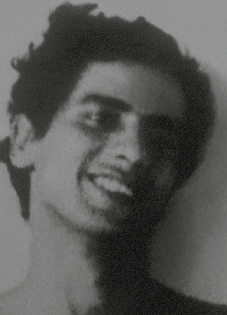

Alex
de Paula
Xavier
Pereira
CIRCUNSTÂNCIAS DA MORTE
Alex de Paula Xavier Pereira morreu no dia 20 de janeiro de 1972 juntamente com seu companheiro de militância da Ação Libertadora Nacional (ALN), Gelson Reicher, em ação perpetrada por agentes do DOI-CODI do II Exército. A nota oficial fornecida pelos órgãos de segurança foi divulgada pela imprensa dois dias depois com a versão de que Alex e Gelson teriam sido mortos em confronto armado com as forças de segurança do Estado. A edição de 22 de janeiro de 1972, de O Estado de São Paulo, informava que “O volks de placa CK 4848 corre pela Avenida República do Líbano. Em um cruzamento, o motorista não respeita o sinal vermelho e quase atropela uma senhora que leva uma criança no colo. Pouco depois, o cabo Silas Bispo Feche, da PM, que participa de uma patrulha, manda o carro parar. Quando o volks pára, saem do carro o motorista e seu acompanhante atirando contra o cabo e seus companheiros; os policiais também atiram. Depois de alguns minutos três pessoas estão mortas e uma outra ferida. Os mortos são o cabo da Polícia Militar e os ocupantes do volks, terroristas Alex de Paula Xavier Pereira e Gelson Reicher”. Desde o início da década de 1970, Alex de Paula e Gelson Reicher eram acusados pelos órgãos de segurança de participação em diversas ações armadas. De acordo com documentos localizados no Arquivo Nacional, os agentes da repressão acusavam Alex de ter recebido treinamento de guerrilha em Cuba. Os dois guerrilheiros tinham suas fotos estampadas em cartazes que os identificavam como “Bandidos Terroristas Procurados” e o nome de Alex Xavier também foi citado em matérias do Jornal do Brasil como sendo procurado pelo Exército por ser acusado de assalto a bancos e quartéis. O trabalho de desvendamento das circunstâncias que culminaram nas mortes de Alex e Gelson ganhou impulso, contraditoriamente, a partir da nota produzida pelos órgãos de repressão e para simular a efetiva dinâmica dos fatos relacionados a essas mortes. Na nota distribuída à imprensa, havia a informação dos codinomes que os dois militantes utilizavam na clandestinidade. Foi com esses nomes que os agentes do Estado registraram a entrada dos corpos de Alex e Gelson no Instituto Médico Legal; Alex Xavier como “João Maria de Freitas” e Gelson Reicher como “Emiliano Sessa”. Com esses nomes falsos, enterraram os dois militantes como indigentes no cemitério de Dom Bosco, em Perus (SP); e a partir dessa informação, foi possível encontrar os corpos registrados com os nomes falsos. No caso de Alex, somente em 1979 seus familiares conseguiram localizar seus restos mortais. Passados mais de 40 anos as investigações sobre esse episódio, realizadas ao longo das últimas décadas, e as pesquisas e estudos realizados pela Comissão Nacional da Verdade (CNV) revelaram a existência de inúmeros elementos de convicção que permitem apontar que a versão divulgada à época não se sustenta. Desde a divulgação da nota oficial comunicando a morte de Alex e, sobretudo, a partir da descoberta de seus restos mortais em 1979, seus familiares questionavam o fato de que, apesar de conhecer a identidade de Alex, os órgãos de segurança o sepultaram como indigente e com nome falso, para impedir o acesso ao seu corpo. Quando os arquivos do Departamento de Ordem Política e Social de São Paulo (DOPS/SP) foram abertos, em 1992, foram localizadas fotos dos corpos de Alex e Gelson, demonstrando a visível presença de inúmeros hematomas e escoriações. Para avançar na elucidação das circunstâncias de morte dos militantes, a Comissão de Familiares de Mortos e Desaparecidos Políticos encaminhou cópia das fotografias encontradas para o médico legista Nelson Massini e solicitou a realização de um parecer. O laudo elaborado pelo Dr. Massini, em 6 de março de 1996, atestou que Alex Xavier foi morto sob tortura. É possível concluir, de acordo com o Dr. Massini, “com absoluta convicção, que o Sr. Alex de Paula Xavier Pereira esteve dominado por seus agressores que produziram lesões vitais e não mortais anteriores àquelas fatais e posteriormente desferiram lesões mortais, sendo as primeiras absolutamente desnecessárias tendo contribuído apenas para aumento do sofrimento antes da morte configurando-se o verdadeiro processo de tortura”. As análises do Dr. Massini destacam ainda que o laudo do IML, assinado por Isaac Abramovitch e Abeylard de Queiroz Orsini, descreveu apenas os ferimentos produzidos por projétil de arma de fogo. Não foi registrada nenhuma referência às equimoses e escoriações que se faziam visíveis no corpo de Alex. Os mesmos legistas que fraudaram o laudo médico, em ação cooperativa e vinculada às práticas de graves violações de direitos humanos, iriam, cinco meses depois, cometer os mesmos crimes, ao falsificar o laudo de óbito de Iuri Xavier Pereira, irmão de Alex. O laudo do Dr. Massini, que atestava a prática de tortura, incitou novas pesquisas. A narrativa que havia sido apresentada pelos órgãos de segurança sustentava que o encontro entre os agentes da repressão e os militantes da ALN fora casual, culminando em troca de tiros e na morte de Alex e Gelson. Por intermédio de pesquisas realizadas nos arquivos do DOPS/SP foram localizados documentos que revelam aspectos que indicam a fragilidade da falsa versão. Essa evidência se relaciona ao fato de que os corpos de Alex e Gelson deram entrada no IML trajando apenas cuecas, o que sugere que os militantes, após o suposto confronto armado do dia 20 de janeiro de 1972, foram conduzidos para outro local, antes de ingressarem no necrotério. Também corrobora com a desconstrução da versão apresentada pela ditadura, o depoimento prestado à CNV pelo juiz auditor Nelson da Silva Machado Guimarães, no dia 30 de julho de 2014, quando foi indagado a respeito da ocultação dos cadáveres de Alex de Paula Xavier e Gelson Reicher, nos seguintes termos: CNV – É, Alex de Paula Xavier Pereira e Gelson Reicher. O senhor quis extinguir a punibilidade deles, para não aceitar uma denúncia e um processo contra pessoas que o senhor já tinha verificado que estavam mortas. Nelson da Silva Machado Guimarães – Mas em que eu me baseio aí? CNV – O senhor tem esse processo, e eu tenho aqui os documentos, que eu posso lhe passar daqui a pouco. Nesse processo, o senhor solicitou tanto à autoridade policial militar como à autoridade policial, ao DOPS, um delegado, o senhor solicitou o atestado… Nelson da Silva Machado Guimarães – De óbito. CNV – …de óbito. Esse atestado de óbito o senhor solicitou indicando o nome verdadeiro. Veio o atestado com o nome falso, que era como os atestados eram feitos, para viabilizar essa política de desaparecimento. O senhor extinguiu a punibilidade com base num atestado falso, e sabia que era falso. O senhor sabia que era falso, porque o senhor deu o nome verdadeiro dele, para pedir. Tem aqui a documentação. (…) Além de demonstrar a participação do Poder Judiciário no processo de ocultação de cadáver dos dois militantes, o depoimento confirma que os órgãos de segurança tinham conhecimento da verdadeira identidade dos militantes quando fizeram o sepultamento com os nomes falsos, demonstrando a ação deliberada que visava impedir ou dificultar fortemente que as famílias localizassem os corpos. Em 24 de fevereiro de 2014, a CNV realizou um laudo pericial sobre a morte de Alex de Paula Xavier Pereira. A equipe de peritos da CNV conduziu análises periciais comparativas valendo-se de novas tecnologias de análise pericial. As análises comparativas entre o laudo de necropsia realizado no IML de São Paulo em 1972 pelos legistas Isaac Abramovitch e Abeylard de Queiroz Orsini, e o laudo produzido por Nelson Massini em 1996, revelaram incontornáveis contradições. De acordo com o laudo da CNV, as lesões a tiros no corpo de Alex Xavier eram incompatíveis com as lesões que pessoas mortas em tiroteio apresentariam. A versão que foi apresentada para a morte de Alex de Paula Xavier Pereira consiste em mais um exemplo das farsas, que eram montadas por agentes da repressão, para encobrir ações ilegais. Os restos mortais de Alex de Paula Xavier Pereira foram enterrados como indigente no Cemitério Dom Bosco, em Perus (SP) e somente em 18 de outubro de 1982 foram trasladados para o Rio de Janeiro, após a ação de retificação dos registros de óbito, sepultados junto com os restos mortais de seu irmão, Iuri Xavier. Em 21 de março de 2014, o Instituto Nacional de Criminalística (INC) concluiu a análise pericial e produziu um laudo que atestou que os restos mortais encontrados são compatíveis com os de um filho biológico de Zilda Paula Xavier Pereira, o que permitiu a identificação plena dos restos mortais de Alex de Paula Xavier Pereira.
Alex de Paula Xavier Pereira died on January 20, 1972 together with his fellow member of the National Liberation Action (ALN), Gelson Reicher, in an action carried out by DOI-CODI agents from the II Army. The official note provided by the security agencies was released by the press two days later with the version that Alex and Gelson had been killed in an armed confrontation with the State security forces. The edition of January 22, 1972, of O Estado de São Paulo, reported that "The Volkswagen with license plate number CK 4848 runs along Avenida República do Libano. At an intersection, the driver does not respect the red light and almost runs over a lady who is carrying a child on her lap. Shortly afterwards, Corporal Silas Bispo Feche, from the Military Police, who is participating in a patrol, orders the car to stop. When the Volkswagen stops, the driver and his companion get out of the car, shooting at the corporal and his companions; police officers also shoot. After a few minutes, three people are dead and another injured. The dead are the Military Police corporal and the occupants of the VW, terrorists Alex de Paula Xavier Pereira and Gelson Reicher”. Since the beginning of the 1970s, Alex de Paula and Gelson Reicher were accused by security agencies of participating in several armed actions. According to documents located at the National Archives, repression agents accused Alex of having received guerrilla training in Cuba. The two guerrillas had their photos printed on posters that identified them as “Wanted Terrorist Bandits” and the name of Alex Xavier was also mentioned in articles in Jornal do Brasil as being wanted by the Army for being accused of robbing banks and barracks. The work of unraveling the circumstances that culminated in the deaths of Alex and Gelson gained momentum, contradictorily, from the note produced by the repression bodies and to simulate the effective dynamics of the facts related to these deaths. In the note distributed to the press, there was information about the code names that the two militants used in hiding. It was with these names that State agents registered the entry of Alex and Gelson's bodies into the Legal Medical Institute; Alex Xavier as “João Maria de Freitas” and Gelson Reicher as “Emiliano Sessa”. Using these false names, they buried the two militants as paupers in the Dom Bosco cemetery, in Perus (SP); and from this information, it was possible to find the bodies registered under false names. In Alex's case, it was only in 1979 that his family were able to locate his remains. More than 40 years later, investigations into this episode, carried out over the last few decades, and research and studies carried out by the National Truth Commission (CNV) revealed the existence of numerous elements of conviction that allow us to point out that the version published at the time is not sustainable. Since the release of the official note announcing Alex's death and, above all, since the discovery of his remains in 1979, his family questioned the fact that, despite knowing Alex's identity, the security agencies buried him as a pauper and with a false name, to prevent access to his body. When the archives of the São Paulo Department of Political and Social Order (DOPS/SP) were opened in 1992, photos of Alex and Gelson's bodies were located, demonstrating the visible presence of numerous bruises and abrasions. To advance the elucidation of the circumstances of the militants' deaths, the Commission of Relatives of the Political Dead and Missing Persons sent a copy of the photographs found to the coroner Nelson Massini and requested an opinion. The report prepared by Dr. Massini, on March 6, 1996, attested that Alex Xavier was killed under torture. It is possible to conclude, according to Dr. Massini, “with absolute conviction, that Mr. Alex de Paula Xavier Pereira was dominated by his attackers who produced vital and non-fatal injuries prior to the fatal ones and subsequently inflicted mortal injuries, the first being absolutely unnecessary and only contributing to an increase in suffering before death, configuring the true process of torture.” Dr. Massini's analyzes also highlight that the IML report, signed by Isaac Abramovitch and Abeylard de Queiroz Orsini, described only the injuries caused by a firearm projectile. No reference was made to the bruises and abrasions that were visible on Alex's body. The same coroners who falsified the medical report, in a cooperative action linked to serious human rights violations, would, five months later, commit the same crimes, by falsifying the death report of Iuri Xavier Pereira, Alex's brother. security maintained that the meeting between the repression agents and the ALN militants was random, culminating in an exchange of gunfire and the death of Alex and Gelson. Through research carried out in the DOPS/SP archives, documents were found that reveal aspects that indicate the fragility of the false version. They were taken to another location, before entering the morgue. Also corroborating the deconstruction of the version presented by the dictatorship, the statement given to the CNV by the auditor judge Nelson da Silva Machado Guimarães, on July 30, 2014, when he was asked about the concealment of the bodies of Alex de Paula Xavier and Gelson Reicher, in the following terms: CNV – Yes, Alex de Paula Xavier Pereira and Gelson Reicher. You wanted to extinguish the death. their punishment, in order not to accept a complaint and a lawsuit against people who you had already verified were dead. Nelson da Silva Machado Guimarães – But what am I based on there? You requested this death certificate indicating the real name. The certificate came with the false name, which was how the certificates were made, to make this policy of disappearance possible. You canceled the punishment based on a false certificate, and you knew it was false, because you gave his real name, to ask for. The testimony confirms that the security agencies were aware of the true identity of the militants when they carried out the burial under false names, demonstrating the deliberate action that aimed to prevent or severely hinder the families from locating the bodies. On February 24, 2014, the CNV carried out an expert report on the death of Alex de Paula Xavier Pereira. between the autopsy report carried out at the São Paulo IML in 1972 by coroners Isaac Abramovitch and Abeylard de Queiroz Orsini, and the report produced by Nelson Massini in 1996, revealed unavoidable contradictions. According to the CNV report, the gunshot injuries on Alex Xavier's body were incompatible with the injuries that people killed in a shooting would present. The version that was presented regarding the death of Alex de Paula Xavier Pereira is yet another example of the hoaxes, which were put together by agents of repression, to cover up illegal actions. The remains of Alex de Paula Xavier Pereira were buried as a pauper in the Dom Bosco Cemetery, in Perus (SP) and only on October 18, 1982 were they transferred to Rio de Janeiro, after the action to rectify the death records, buried together with the remains of his brother, Iuri Xavier. On March 21, 2014, the National Institute of Criminalistics (INC) concluded the expert analysis and produced a report that attested that the remains found were compatible with those of a biological son of Zilda Paula Xavier Pereira, which allowed the full identification of the remains of Alex de Paula Xavier Pereira.
Alex de Paula Xavier Pereira falleció el 20 de enero de 1972 junto a su compañero de Acción de Liberación Nacional (ALN), Gelson Reicher, en una acción llevada a cabo por agentes del DOI-CODI del II Ejército. La nota oficial proporcionada por los organismos de seguridad fue difundida por la prensa dos días después con la versión de que Alex y Gelson habían sido asesinados en un enfrentamiento armado con las fuerzas de seguridad del Estado. La edición del 22 de enero de 1972, de O Estado de São Paulo, informó que "El Volkswagen con matrícula CK 4848 circula por la Avenida República do Libano. En un cruce, el conductor no respeta el semáforo en rojo y casi atropella a una señora que lleva un niño en su regazo. Poco después, el cabo Silas Bispo Feche, de la Policía Militar, que participa en una patrulla, ordena al coche que se detenga. Cuando el Volkswagen se detiene, el conductor y su acompañante bajan del auto, disparando contra el cabo y sus acompañantes; luego de unos minutos, tres personas mueren y otra resulta herida. Los muertos son el cabo de la Policía Militar y los ocupantes del VW, los terroristas Alex de Paula Xavier Pereira y Gelson Reicher”. Desde principios de los años 1970, Alex de Paula y Gelson Reicher fueron acusados por organismos de seguridad de participar en varias acciones armadas. Según documentos ubicados en el Archivo Nacional, agentes de represión acusaron a Alex de haber recibido entrenamiento guerrillero en Cuba. Los dos guerrilleros tenían sus fotografías impresas en carteles que los identificaban como “Bandidos Terroristas Buscados” y el nombre de Alex Xavier también fue mencionado en artículos del Jornal do Brasil como buscado por el Ejército por ser acusado de robar bancos y cuarteles. El trabajo de desentrañar las circunstancias que culminaron con las muertes de Alex y Gelson tomó impulso, contradictoriamente, a partir de la nota producida por los órganos de represión y para simular la dinámica efectiva de los hechos relacionados con estas muertes. En la nota distribuida a la prensa había información sobre los nombres en clave que los dos militantes utilizaron para esconderse. Fue con estos nombres que agentes del Estado registraron el ingreso de los cuerpos de Alex y Gelson al Instituto Médico Legal; Alex Xavier como “João Maria de Freitas” y Gelson Reicher como “Emiliano Sessa”. Con estos nombres falsos, enterraron a los dos militantes como indigentes en el cementerio Dom Bosco, en Perus (SP); y a partir de esta información se pudo encontrar los cuerpos registrados con nombres falsos. En el caso de Alex, no fue hasta 1979 que su familia pudo localizar sus restos. Más de 40 años después, las investigaciones sobre este episodio, realizadas a lo largo de las últimas décadas, y las investigaciones y estudios realizados por la Comisión Nacional de la Verdad (CNV) revelaron la existencia de numerosos elementos de convicción que permiten señalar que la versión publicada en su momento no es sostenible. Desde la difusión de la nota oficial que anunciaba la muerte de Alex y, sobre todo, desde el descubrimiento de sus restos en 1979, su familia cuestionó que, a pesar de conocer la identidad de Alex, los organismos de seguridad lo enterraran como un indigente y con un nombre falso, para impedir el acceso a su cuerpo. Cuando se abrieron los archivos del Departamento de Orden Político y Social de São Paulo (DOPS/SP) en 1992, se localizaron fotografías de los cuerpos de Alex y Gelson, que demostraban la presencia visible de numerosos hematomas y abrasiones. Para avanzar en el esclarecimiento de las circunstancias de la muerte de los militantes, la Comisión de Familiares de Muertos y Desaparecidos Políticos envió copia de las fotografías encontradas al médico forense Nelson Massini y solicitó dictamen. El informe elaborado por el Dr. Massini, el 6 de marzo de 1996, atestigua que Alex Xavier fue asesinado bajo tortura. Se puede concluir, según el Dr. Massini, “con absoluta convicción, que el Sr. Alex de Paula Xavier Pereira fue dominado por sus agresores quienes le produjeron lesiones vitales y no fatales previas a las fatales y posteriormente le infligieron lesiones mortales, siendo las primeras absolutamente innecesarias y sólo contribuyendo a un aumento del sufrimiento antes de la muerte, configurando el verdadero proceso de tortura”. Los análisis del Dr. Massini también destacan que el informe del IML, firmado por Isaac Abramovitch y Abeylard de Queiroz Orsini, describía únicamente las lesiones causadas por un proyectil de arma de fuego. No se hizo referencia a los moretones y abrasiones que eran visibles en el cuerpo de Alex. Los mismos forenses que falsificaron el informe médico, en una acción cooperativa vinculada a graves violaciones de derechos humanos, cometerían, cinco meses después, los mismos delitos, al falsificar el informe de muerte de Iuri Xavier Pereira, hermano de Alex. Seguridad sostuvo que el encuentro entre los agentes de represión y los militantes de la ALN fue aleatorio, culminando con un intercambio de disparos y la muerte de Alex y Gelson. A través de investigaciones realizadas en los archivos del DOPS/SP, se encontraron documentos que revelan aspectos que indican la fragilidad de la versión falsa. Fueron trasladados a otro lugar, antes de ingresar a la morgue. Corrobora también la deconstrucción de la versión presentada por la dictadura, la declaración rendida ante la CNV por el juez auditor Nelson da Silva Machado Guimarães, el 30 de julio de 2014, cuando fue consultado sobre el ocultamiento de los cadáveres de Alex de Paula Xavier y Gelson Reicher, en los siguientes términos: CNV – Sí, Alex de Paula Xavier Pereira y Gelson Reicher. Querías extinguir la muerte. su castigo, para no aceptar una denuncia y un juicio contra personas que ya habías comprobado que estaban muertas. Nelson da Silva Machado Guimarães – ¿Pero en qué me baso ahí? Usted solicitó este certificado de defunción indicando el nombre real. El certificado venía con el nombre falso, que era como se hacían los certificados, para hacer posible esta política de desaparición. Cancelaste el castigo basándose en un certificado falso, y sabías que era falso, porque diste su nombre real para pedirlo. El testimonio confirma que los organismos de seguridad conocían la verdadera identidad de los militantes cuando realizaron el entierro con nombres falsos, lo que demuestra una acción deliberada que tenía como objetivo impedir o dificultar gravemente a las familias la localización de los cuerpos. El 24 de febrero de 2014 la CNV realizó un peritaje sobre la muerte de Alex de Paula Xavier Pereira. entre el informe de la autopsia realizado en el IML de São Paulo en 1972 por los forenses Isaac Abramovitch y Abeylard de Queiroz Orsini, y el informe elaborado por Nelson Massini en 1996, revelaron contradicciones inevitables. Según el informe de la CNV, las heridas de bala en el cuerpo de Alex Xavier eran incompatibles con las lesiones que presentarían las personas fallecidas en un tiroteo. La versión que se presentó sobre la muerte de Alex de Paula Xavier Pereira es una muestra más de los bulos, que fueron elaborados por agentes de la represión, para encubrir acciones ilegales. Los restos de Alex de Paula Xavier Pereira fueron enterrados como indigente en el Cementerio Dom Bosco, en Perus (SP) y recién el 18 de octubre de 1982 fueron trasladados para Río de Janeiro, después de la acción de rectificación de actas de defunción, enterrados junto con los restos de su hermano, Iuri Xavier. El 21 de marzo de 2014, el Instituto Nacional de Criminalística (INC) concluyó el peritaje y elaboró un informe que acreditó que los restos encontrados eran compatibles con los de un hijo biológico de Zilda Paula Xavier Pereira, lo que permitió la identificación completa de los restos de Alex de Paula Xavier Pereira.